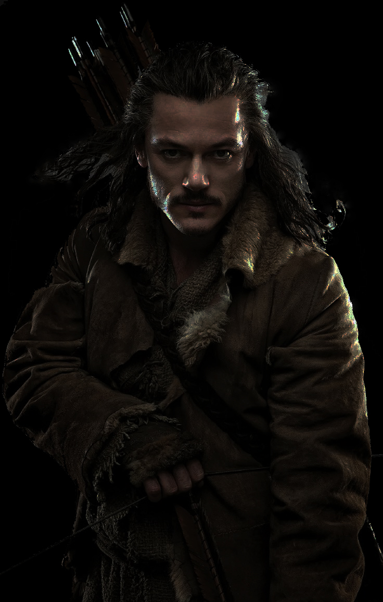

Man
The terms Man and Men refer to humankind – in contrast to Elves, Dwarves, Orcs, and other humanoid races – and does not denote gender.Men bear the Gift of Men, mortality. Elves are immortal, in the sense that they do not perceivably age, and even if their bodies are slain, their spirits remain bound to the world, going to the Halls of Mandos, where they are later re-embodied; a cycle that will perpetuate for them until the world ends. Although all Men are related to one another, there are many different groups with different cultures.